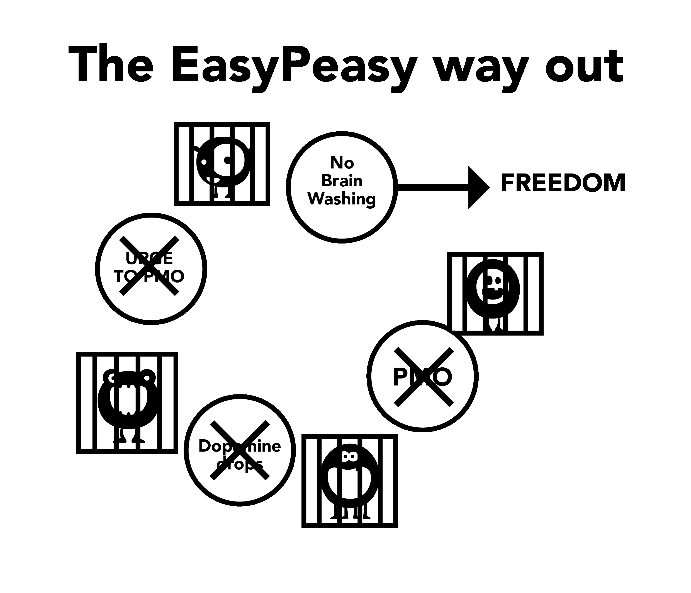

第6章 Brainwashing Aspects 洗脳の諸相¶
このポルノの罠の大きな怪物は、社会的権威、メディア描写、同僚、そして、ポルノ使用者自身の内面的な解釈を含む、様々な側面の積み重ねを通して増殖する。意志の力を用いる手法を使っている時に、これらの誤認識の解体に失敗すると、最終的に困窮感へと至り、ポルノ使用者は元の罠に戻される。想像されたポルノの価値の解体は、成功に必須であり、あなたが強奪を受けた場所を見せてくれる！
留意すべき重要な点は、洗脳と恐怖の繋がりである。未来に起こる禁断症状発作を感じることへの恐れが、禁断症状発作を作り出している。恐怖は禁断症状発作そのものである。禁断症状の症状が出た時のことを考えてほしい、手汗、息切れ、睡眠の問題、そして、うまく頭が働かない。次に、あなたがこれらの感覚を感じたことがある類似する状況を思い浮かべてほしい：就職面接、魅力的な人の前での緊張、公演演説、などなど。これらは恐怖が引き起こす同じ不安の感情である。簡単に言うと、どうして物理的な麻薬が、その使用をやめて数カ月も経った人を中毒にできるのか？それは精神的なものに違いない、そうでしょう？
Stress ストレス¶
人生の大きな悲劇だけではなく、小さなストレスも、ポルノ使用者を、それまでは除外されていた禁じられた「安全ではない」エリアへと駆り立てる。ストレスとは、社会的集い、電話、幼い子供を持つ主婦の不安、など、他にもたくさんある。電話を例にしてみよう、特に実業家。ほとんどの電話は、満足した顧客からでも、上司からの褒め言葉でもない、何かしらの問題である。家に帰ると、相も変わらず、子供の叫び声、そして、パートナーの情緒的要求、それらはポルノ使用者に、（もしまだそうしていないなら）、その夜の約束されたポルノによる緩和を想像させる。彼らは無意識に禁断症状発作に苛まれる、ストレス解消手段は弱体化し、追加の問題には無防備。部分的な禁断症状発作の解消と同時に通常のストレスも解消され、全体として減少する、ポルノ使用者は一時的なブーストを得る。このブーストは幻ではない、ポルノ使用者の気分はそれまでよりも本当に改善している、非ポルノ使用者であった場合に比べればそれでもまだ緊張しているが。
以下の例はあなたにショックを与えるためにデザインされたものではない、EasyPeasyはその様な治療は行わないと約束する、これらの例はポルノは緊張、不安を緩和しているというより破壊しているということを強調するためのもの。
想像してみてほしい、あなたは性的に興奮させられることが不可能な段階に入ろうとしている、非常にセクシーで魅力的なパートナーであっても。一瞬でも、立ち止まって想像してみてほしい、非常に可愛らしく魅力的な人が、あなたの気を引くために、あなたの「ハーレム」を占めるバーチャルポルノスターたちと競争し、敗北しなくてはならない人生を。ある人物は、この警告を受けてもなおポルノの使用を続け、この魅力的であなたを思い続けてくれたパートナーと一度も本当のセックスをせずに死んだ、この人の気分を想像してほしい。こういう人たちのことを変態と切り捨てるのは簡単だ、だがこれらの話は作り話ではない、これがポルノ麻薬の恐ろしい新奇さがあなたの脳にすること。年齢を重ねるほど、勇気は弱まり、蒙昧しポルノは全く逆の事をしていると信じ込む。
何の前触れもなくWiFiが止まったり遅くなった時に、パニックに襲われたことはないだろうか？非ポルノ使用者がそれに苦しむことはない、インターネットポルノがその感情を作り出しているのだから。年齢を重ねると、それは、あなたの神経と勇気を破壊する、デルタフォスBは通り過ぎた経路に、強力な神経系のウォータースライドを残して行く、あなたの「ノー」を言う能力を徐々に破壊する。男らしさが殺された段階に至ると、ポルノ使用者はポルノが自分の新しいパートナーだと信じるようになる、そしてそれなしに人生に向き合えなくなる。
インターネットポルノは、あなたの不安と緊張を緩和しいるのではない、ゆっくりと破壊している。依存症を断ち切ることによる大きな恩恵の一つは、あなたの自然な本来のconfidence（自信、自分の能力への確信）とself-assurance（自信、自分の能力を信じていること）を取り戻すことである。
パートナーを満足させるための自分の能力を自己評価する必要はない、これは自由ではない。しかし、この自由は、同じ破壊的行動を繰り返すことで、自分の幸福と性欲を壊し、ドーパミンウォータースライドを潤滑させ続けることでは得られない。
Boredom 退屈¶
あなたも多くの人と同じなら、ベッドに入ると、すぐ、自分のお気に入りのポルノサイトにいる、恐らくもう忘れてしまっているのではないか、思い出させられない限り。それは準本能になっている。同様に、ポルノが退屈を解消しているというのも誤った認識である、なぜなら退屈は気分だからである；それはあなたが長期間に渡って困窮を感じている時、もしくは、減らそうとした時に生じる。
実際の状況はこうである、あなたがインターネットポルノの超自然的魅力に惹かれて中毒になっている時にそれを控えようとすると、何かが足りない気がする。もしあなたの頭の中が、ストレスを感じない何かで専有されている時は、あなたは長期間、この麻薬の欠乏に悩まされることなくやっていける。しかし、あなたは退屈した時には他に考えることがなくなる、そして、あなたは怪物に餌をやる。あなたがポルノにふけって、やめようとも減らそうともしない時は、シークレットモードを起動することすら潜在意識になる。この儀式は自動である、ポルノ使用者が、先週の自慰セッションを思い出そうとする時、彼らはその少ししか思い出せない、一番最後のか、長い禁欲明けのセッションか。
真実とは、ポルノは間接的に退屈を増加させる、なぜならオーガズムはあなたを無気力にさせる、活発な活動をする代わりに、ポルノ使用者は、ごろごろして過ごし退屈し禁断症状発作を緩和させることを好む傾向にある。洗脳に対抗するのは重要だ、なぜならポルノ使用者は退屈した時にポルノを見る傾向がある、我々の脳はインターネットポルノを面白いものとして配線されている。同様に、我々は、セックスが、（例えそれが悪いセックスでも）、リラックスの助けになると信じ込むように洗脳を受けてきた。悲しみやストレス下で、カップルがセックスを求めるのは事実である。タントラセックス(親密のためのオーガズムを目的としないセックス）と生殖のためのセックスの区分の欠如から、義務的なオーガズムに達した後、あなたはどれだけ素早く互いが離れたくなるか、注目してほしい。そのカップルが、ただ、ハグか話か抱擁をして眠りにつくこと決断していたら、彼らは安らぎを感じただろう。
Concentration 集中¶
自慰とセックスは集中の助けにはならない、あなたは集中しようとする時、あなたは自動的に気が散るものを避けようとする。ゆえに、ポルノ使用者が集中したい時、彼らは考えることすらなく、自動的にブラウザを開き、小さな怪物に餌をやり、部分的にクレイビング（切望）を終わらせる。彼らはその時にやるべきことに取り掛かり、すでにポルノを見たことを忘れている。何年にも渡るドーパミン洪水の後で、神経学的変化が情報へのアクセスや計画、衝動のコントロールといった能力に影響を与えている。
また、あなたは、次の自慰セッションに新奇さを与えることに駆り立てられる、同じものでは十分なドーパミンとオピオイドを得られない。なので、あなたは、新奇さを求めてインターネットをさまよう、ラインを超えてショッキングなものを求めるという誘惑と戦いながら、結果としてそれはよりストレスを強め、自慰後に不満を残させる。
集中は逆効果も受ける、大きな急増に対する自然な耐性によってドーパミン受容体は選抜除去され、自然なストレス解消から得られるより小さなドーパミンブーストの恩恵は減少する。この過程を減らせられれば、あなたの集中と閃きは大きなブーストを受けるだろう。多くの人たちにとって、この集中の側面が意志の力を使う手法の成功の妨げとなっている。彼らは苛立ちや短気は我慢できるが、支えを失ってから何か難しいものに対して集中を失敗すると多く人は挫ける。
ポルノ使用者が脱出を試みる時に苦しむ集中力の欠如は、セックスや、ましてやポルノの不在によるものではない。何かに中毒となった場合、あなたは精神的ブロック（思考の遮断）を持つ、そして精神的ブロックを持つと、あなたは何をするか？ブラウザーを立ち上げる、（これはそのブロックを解消しない）、その後あなたは何をするか？あなたは自分がやらなければならないことをやる、非ポルノ使用者がそうする様にそれに取り掛かる。
あなたがポルノ使用者である場合、その原因について何かを責めることはない、ポルノ使用者は絶対に性的機能不全にはならない、時折のダウンタイム（中断時間）だけである。ポルノをやめた瞬間、うまく行かなかったことはすべて、あなたがポルノをやめた理由のせいになる。あなたが精神的ブロックを持った時、それに取り掛かる代わりに、あなたは言い始める「今、自分のハーレムを見ることさえできれば、すべての問題は解決するのになあ」。そしてあなたは、奴隷状態からの脱却という自分の決断に疑問を持ち始める。
もし、あなたがポルノが、本当に、集中の助けであると信じ、ポルノをやめることは自分が集中できなくなることを約束すると心配しているなら、疑ってほしい、問題を作り出しているのは物理的な禁断症状発作ではない。常に覚えておいてほしい、発作に苦しむのはポルノ使用者であって、非ポルノ使用者ではない。
Relaxation リラクゼーション くつろぎ¶
ほとんどのポルノ使用者は、ポルノがリラックスに役立つと考えている。それは違う。フィクス（麻薬成分摂取）のため「薄暗いインターネットの路地裏」で猛烈な検索をする、そして手綱を振り切って一線を越えたい葛藤、どう見てもとても和やかな活動には見えない。
新しい場所に出かけた後、または長い一日の後で夜がやってくると、我々は座ってくつろぐ、空腹と喉の乾きを解消し、完全に満足する。ポルノ使用者の場合は違う、彼らには満たさなければならない別の飢えがある。ポルノ使用者は、ポルノを、良いものをさらに良くするものだと考えている、実際には、餌をやりを必要としているのは「小さな怪物」である。真実とは、依存症患者は完全にリラックスすることは絶対にないということ、そして指数関数的に悪くなってゆく人生を歩むということ。元ポルノ使用者のコメントをどうぞ：
ーーー
”私は自分の中に邪悪な悪魔がいると本当に信じていた、だが今、私は知っている、自分の個性に生まれつきの誤りがあったのではなく、リトル・インターネット・ポルノ・モンスターが問題の原因だったということを。あの頃、私は、世の中に存在する問題のすべてを自分は持っていると考えていた、しかし、自分の人生を振り返ってみて、私はこの強大なストレスはどこにあったのだろうかと疑問を持つ。自分の人生においてそれ以外のすべては自分がコントロールできた、唯一、私をコントロールしていたのがポルノへの隷属だった。悲しいことに、今となっても、私は自分の子供に、自分をひどく苛立たせていたのはこの隷属だったと説得することができない。”
ーーー
毎回、私がポルノ依存症患者が、自分の依存症を正当化しようとするのを耳にする時、そのメッセージは、「いや、ポルノはリラックスするのに役立ってるよ」。ネット上にあった父子家庭の話、彼の6歳の息子は怖い映画を見た後、父親と同じベッドで眠りたがった、だが父親は拒否した、自慰とエッジ（射精抑制）を何時間も楽しむために。
別の喫煙との比喩をもう一つ紹介する、数年前、養子管轄機関が喫煙者に養子をもらわないように警告をしたことがあった。ある男が電話をかけ激怒した、「お前は完全に間違っている」彼は言った、「俺は自分が子供だった頃のことを覚えいる、母親に対し異論があった時は、自分は母親がタバコに火を点けるまで待った、その方が母親は落ち着くから」。なぜこの男は、母親がタバコを吸っていない時には、話ができなかったのかだろうか？
なぜ、ポルノ使用者の中には、ポルノ麻薬注射がない時にそれほどにストレスを感じる者たちがいるのか、現実のセックスをした後でさえ？ネット上の話、広告業界で働いている男で、彼にはいつでもデートできる90点や100点の女性が居た、しかし、インターネットポルノの方がずっと簡単だったので、彼女たちを夕食に誘うのに飽きてしまった、レストランでの出費がなく、そのデートの夜の最後に「ノー」と言われることがない。彼の小さな怪物は、この家に帰ればすぐに手が届きリスクは低く見返りは高い計画を切望し続けているのに、なぜわざわざデートする必要が？
では、なぜ非ポルノ使用者は完全なリラックスを得るのか？なぜ、ポルノ使用者は、一日に一回か二回のポルノ麻薬注射がないと、リラックスできないのか？ポルノ禁止を誓い、そして、ポルノをやめたポルノ使用者の体験を読んでほしい、誘惑との闘争を見て取れるだろう、彼らに「許された」「唯一の喜び」を禁じられた時、明らかにリラックスなんてできていない。彼らは完全にリラックスするということがどういうことか忘れている。ポルノは食虫植物に捕らえられたハエと似ている、最初はハエが蜜を吸うが、気が付かないうちに、ある段階から、植物が羽ハエを食べ始める。
今が、食虫植物の中から這い出る時ではないですか？
Energy エネルギー¶
ほとんどのポルノ使用者は、ポルノが持つ新奇さとより激しいものを探し求める進行性の影響が、自分の脳の報酬系と生殖系に及んでいることに気づいている。しかし、彼らは自分のエネルギーレベルに対する影響には気づいていない。
ポルノの罠の巧妙さの一つは、肉体と精神の両方にその影響を及ぼすこと、それはとてもゆっくりと無自覚に進行し、我々は気付かないまま、禁断症状状態を通常の状態と考えてしまう。この影響は悪い食習慣と似ている、我々は激しく太っている人を見て、彼らはどうして自分をこんな状態にまでさせたのだろうかと思う。だが、それが一晩で起こったとしてみよう、（あなたはベッドの準備をする、筋肉がさざめき、あなたの身体に脂肪は1オンスもない）、目が覚めるとあなたは自分が脂肪で肥太り、太鼓腹である。充分に休めた、エネルギー全回復と感じて目を覚ますのではなく、あなたは惨めで無気力でほとんど目も開けられない。
あなたはパニックに陷るだろう、一晩のうちにどんな酷い病気にかかったのかと考える、しかし病状に変化は全くない。あなたがそこに至るまでに20年かかった事実は関係ない。ポルノも同じである、もし、たった三週間ポルノを禁止した後、どんな気分か直接比較するために、あなたの精神と肉体を即座に移動させることができれば、あなたを説得するには充分だろう。あなたは、自分はこんなに気分が良かったのか、または、要するに「俺はこんなに酷く沈んでいたのか？」と問う。あなたは、単に、より健康により多くのエネルギーを感じるだけでなく、かつてない自信が芽生え、集中力が高まる。
エネルギーの欠如、疲れなどに関するものはすべて「年だから」という言葉の下に綺麗に捨て置けてしまう。活発ではない生活を送る友人や同僚は、この態度の標準化をさらに悪化させる。エネルギーは、子供と十代の特権で、二十代には老齢が始まるという考えは、洗脳の症状の一つである、ドーパミン脱感作の悪影響の結果、食事と運動の習慣に無自覚になっている。
ポルノをやめて少しすると、モヤモヤ蒸し蒸しした感覚は消えるだろう。要するに、ポルノがあると、あなたはいつも自分のエネルギーを借金している、そしてその過程で大脳辺縁系の化学反応を改ざんする。精神と肉体の回復が緩やかな禁煙とは違い、ポルノ禁止は初日から素晴らしい結果をあなたにもたらす。「小さな怪物」を殺すこと、ウォータースライダーを閉鎖すること、には少し時間がかかる、しかし、報酬系中枢の回復は、この落とし穴へのゆっくりとした滑落とは全く異なる。もし、あなたが意志の力を使う手法のトラウマを抱えているなら、得られる健康やエネルギーの利得は、あなたが被る鬱によって帳消しになるだろう。残念なことに、EasyPeasyは、あなたの精神を三週間の時を超えて移すことはできない、だが、あなたにはできる！あなたは直感的に知っている、自分に言われていることは正しいと、あなたがすべきことは、ただ一つ、＜想像力を使うこと！＞
Social Night Session 社交の夜、の自慰セッション¶
これは誤った情報である、道理に適っているようにみえて、そうではない。あなたは自分の食欲をコントロールするために、レストランやパーティーに出かける前に、家で食事をするか？これが、あなたが、社交の夜の前の自慰セッションで行っていることである、疲れた様子で最高の状態じゃない。ナンパの技術の普及によって、パフォーマンスをし、ナンパをし、点数をつけるプレッシャーが導入された。自分のアゲハチョウ（恋心）をポルノと麻薬物質に溺れさせる試みは、長期的には、問題を悪化させるだけである。個人的には、集中と関心を維持するために少し不安があった方が良い、オーガズムで自分を精神的にも肉体的にも疲弊させてしまうのは、何の役にも立たない。
ソーシャルナイトポルノ（社交の夜にポルノセッションをすること）は、二つ以上の我々のいつもの、喜び/支えを探し求める理由が原因となる、ソーシャルファンクション（社会的機能）は、その核において、ストレスが多いものでもあり、寛げるもでもある。これは矛盾に見えるかもしれない、すべての社交の形態は、ストレスフルになりうる、（例え友人といる場合でも）、一人で居たい、完全にリラックスしたいと求める。様々な場合があり、そのひとつひとつに複数の要因がある、ドライブを例にしてみよう、というのも、結局、あなたの命がかかっているわけで。精神的に疲れる、長時間継続して集中力が求められる。あなたはそれらの要素に対し気付かないでいる必要がある、あなたの潜在意識は既にそのメッセージを受け取っている。同じ理由で、交通渋滞にハマった時、長距離の高速道路で退屈した時、家に帰ったら自慰セッションをするという約束があなたの頭の中を占める。
また別の良い例としては、初めてのデートにいくこと、あなたの思考は、あなたがこれから会う人に対する質問を投げかけてくる。そして、もし、その人と実際に目を合わせて、あなたの熱意が減少していくと、あなたは過剰にリラックスしてしまう、そしてこういう気持ちになった罪悪感。綱引きは始まった、「私はセックスがしたい、でなきゃここから可能な限り早く立ち去らせてくれ」、あなたにデート後のポルノに呼び水を与える。
たとえデートがうまく行ったとしても、数時間後あなたは自分の場所に戻っている、あなたが求める目的がオーガズムであるのならば、どっちに転んでもあなたは満足しない。別の時には、あなたは家に一人で車で戻る、あなたが考えることは、唯一、自分のオンラインハーレムだけ、自分で自分の努力を褒め称えるのではなく。賭けてもいい、この立場にある人は、家に帰るやいなや、自慰セッションをする、そしてこういう夜の後によくあるのが、（目を覚ますと落ち着かない空虚感を感じること）、これは我々がポルノをやめることについて考える時に、最も恋しく思うものである。我々は自分の人生をこれまでのように楽しめなくなると考える。事実、ここでは働いているのは同じ原則である、自慰セッションが、シンプルに、禁断症状発作からの緩和を与えた、時に、それらは他のものよりも大きな需要があり、次回に備えウォータースライドを潤滑している。
はっきりさせよう、特別なのは、インターネットポルノとハーレムの住人たちはなく、この行事の方である。ポルノを必要としなくなると、このような行事はより楽しめるものとなり、精神的に疲れる状況も疲れが減る。

翻訳：The EasyPeasy way out イージーピージーな抜け道
No Brain Washing（洗脳なし） → FREEDOM（自由）
↓
x PMO
↓
x ドーパミン急落
↓
x PMOへの欲求
↓
No Brain Washing（洗脳なし）→ FREEDOM（自由）